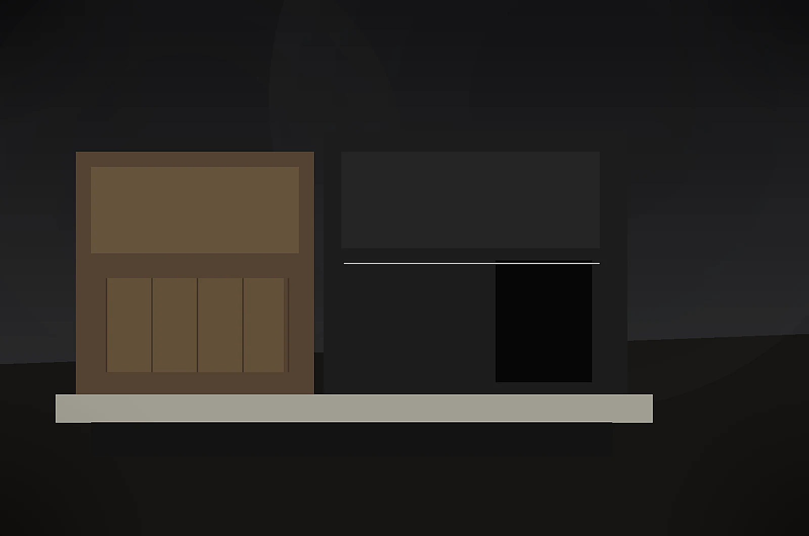
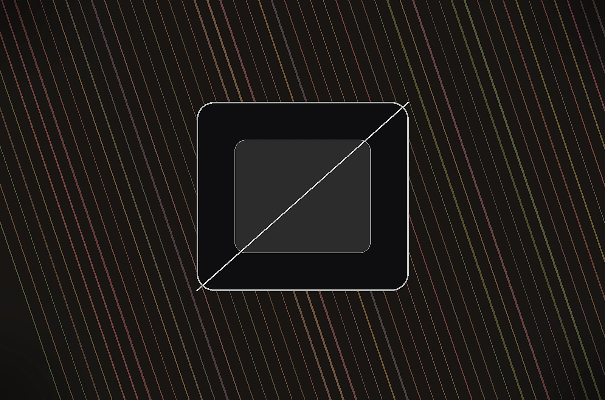
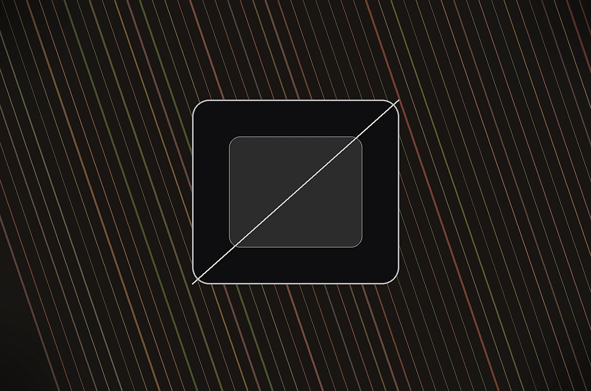
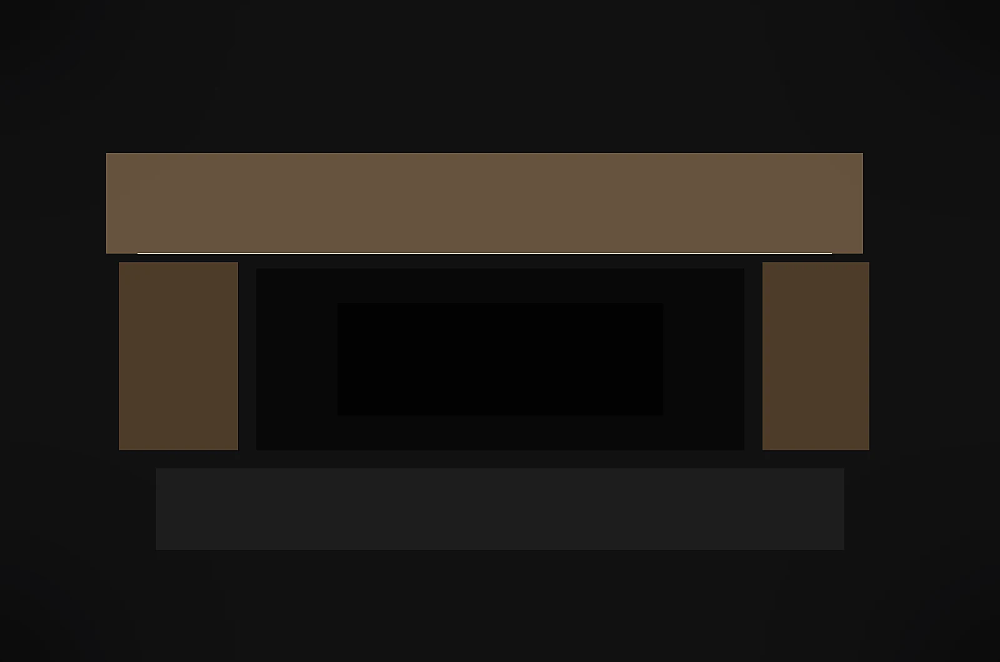
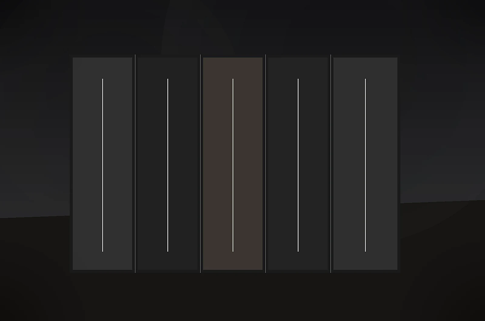

Poradňa
Praktické rady pred výrobou nábytku na mieru.
Odpovede na otázky, ktoré zákazníci riešia pred kuchyňou, vstavanou skriňou alebo kompletným interiérom. Bez zbytočného slovníka, s dôrazom na rozhodnutia, ktoré ovplyvnia cenu, životnosť a každodenné používanie.

Ako si vybrať kuchyňu na mieru
Kuchyňa na mieru má byť navrhnutá podľa priestoru, varenia a každodenných návykov, nie iba podľa pekného obrázka.
Čítať článok →
Koľko stojí kuchyňa na mieru
Cena kuchyne na mieru sa nedá určiť iba podľa metrov. Rozhoduje dispozícia, materiál, kovanie, doska, montáž aj detaily.
Čítať článok →
Aké kovanie je najlepšie do kuchyne
Kovanie nevidno ako prvé, ale cítiť ho každý deň. Rozhoduje o tichu, plynulosti, životnosti a komforte kuchyne.
Čítať článok →
Ako prebieha výroba nábytku na mieru
Dobrý výsledok nevzniká až v dielni. Začína sa správnym zadaním, zameraním, návrhom a výberom detailov.
Čítať článok →
Kuchyňa na mieru vs. sektorová kuchyňa
Sektorová kuchyňa môže byť rýchlejšia voľba, ale kuchyňa na mieru lepšie využije priestor a vydrží viac detailov.
Čítať článok →
Matné alebo lesklé dvierka?
Mat a lesk nemenia iba vzhľad. Ovplyvňujú svetlo, údržbu, odtlačky a celkový pocit z kuchyne.
Čítať článok →